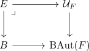

classification of fibrations with typical fibre F for anima
Proposition
Let $F$ be an anima. Then fiber sequences

with fiber $F$ and base anima $B$ are classified by functors
\begin{align*}
B \rightarrow \mathrm{BAut}(F)
\end{align*}
where $\mathrm{BAut}(F)$ is given by the infinity groupoid core of the full subcategory of Anima containing $F$ or equivalently by pullbacks

Proof
follows from straightening-unstraightening:
By Anima slice as Functors into Anima a functor $E \rightarrow B$ with typical fiber $F$ straightens to a functor
\begin{align*}
B \rightarrow \{F\} \subseteq \mathrm{An}
\end{align*}
which restricts to the full subcategory containing objects abstractly equivalent to $F$.
Hence by precomposition and cocartesian straightening we get